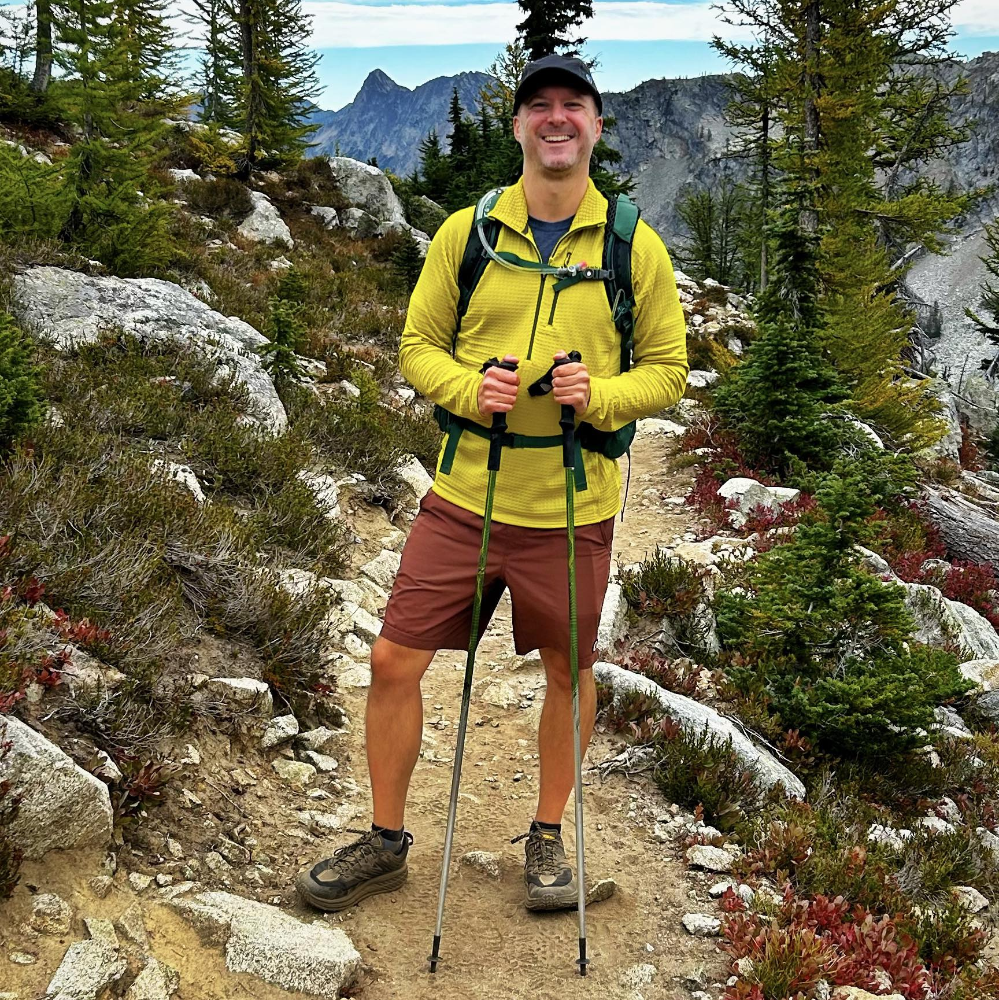

About Me

James Whittington is a Seattle-based freelance video editor with more than two decades of experience bringing stories to life through the art of the cut. Over the course of his career, he has collaborated with some of the world's most recognizable brands — from Amazon and T-Mobile to community institutions like the Seattle International Film Festival — delivering work that is precise, purposeful, and emotionally resonant.
Specializing in commercial and branded content, James brings a filmmaker's sensibility to every project. His work spans healthcare, entertainment, cause marketing, and consumer brands, with a consistent commitment to quality and craft that has made him a trusted collaborator for agencies and production companies throughout the Pacific Northwest and beyond.
Fluent in Adobe Creative Suite and at the forefront of AI-assisted editorial workflows, James combines deep technical expertise with an instinctive understanding of pacing, tone, and narrative — ensuring that every edit serves the story and connects with its audience.
Beyond the Edit Suite
When he's not in the edit suite, James can be found exploring the trails and peaks of the Pacific Northwest. The same attention to rhythm and detail that defines his work follows him outdoors — reading the terrain, finding the right moment, and letting the landscape tell its own story.
Music is another constant in James's life. Whether he's picking up a guitar at home or losing himself in a live show somewhere in Seattle, his love of music runs deep — and it's no coincidence that his editing has always had a natural feel for rhythm, tempo, and the emotional arc of a song.
20+
Years Experience
100+
Projects Completed
50+
Brands & Agencies
1
City Called Home
Expertise & Tools
Specialties
Tools
Education
Notable Clients